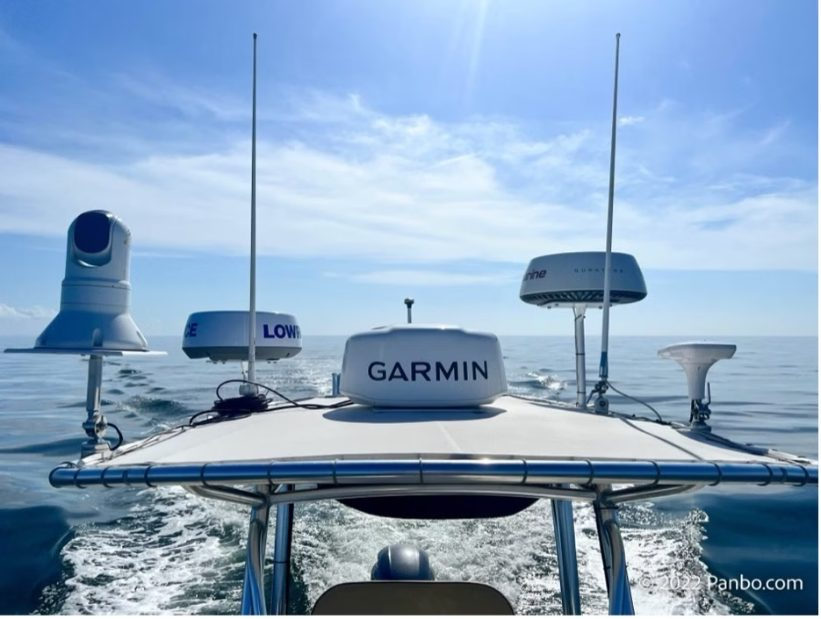
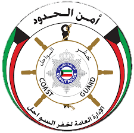
قسم الأجهزة الملاحية والرادارVHF · GPS · ECHO SOUNDER · NOKIA · RADAR — الفصل الثالث: جهاز الرادار
بنهاية هذا الفصل ستكون قادرًا على:
مسارنا اليوم — سبع محطات:
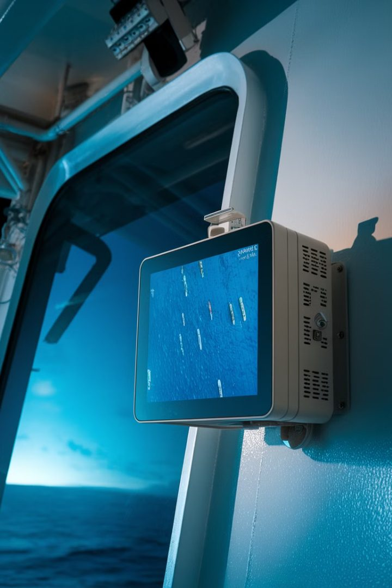
التعريف، ومجالات الاستخدام
الرادار جهاز يستخدم موجات الراديو الميكروويفية (microwave radio frequencies) لتحديد الموقع والمسافة والسرعة والاتجاه للأجسام، مع إمكانية رصد الأهداف وتتبعها.
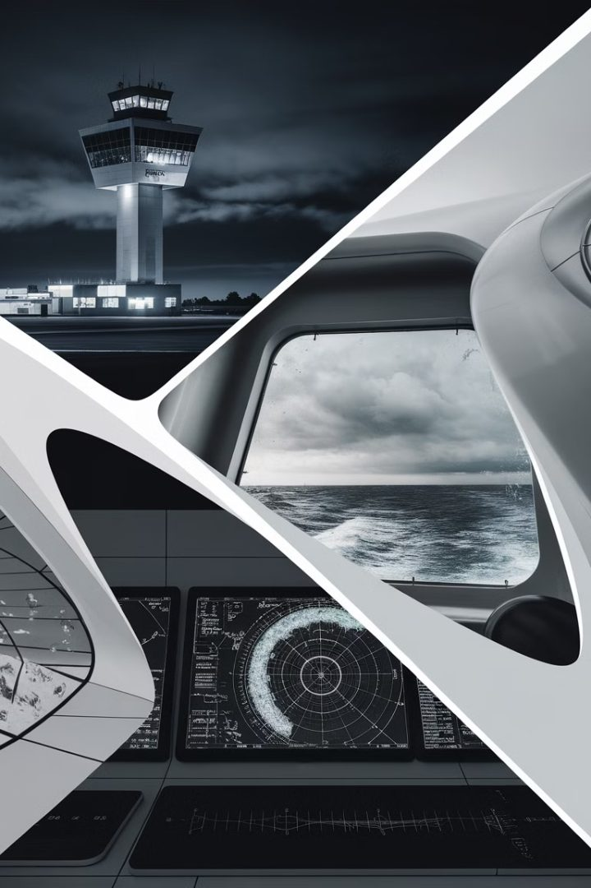
رادارات مراقبة الحركة الجوية تراقب وتدير تحركات الطائرات لضمان الملاحة الآمنة والهبوط في المطارات.
أنظمة الرادار على السفن تساعد على الملاحة واكتشاف المعوقات ومراقبة السفن الأخرى لتجنب الاصطدام — وهذا مجالنا.
رادارات الطقس تتبع هطول الأمطار والعواصف والأحداث الجوية الشديدة، وتوفر بيانات التنبؤات والتحذيرات.
سؤال للنقاش: متى تحتاج الرادار في الدورية وأنت ترى بعينك؟ — الليل، الضباب، الغبار، وتقدير المسافة الحقيقية لهدف بعيد.
الوحدتان الرئيسيتان، والوحدات الأربع داخل الهوائي
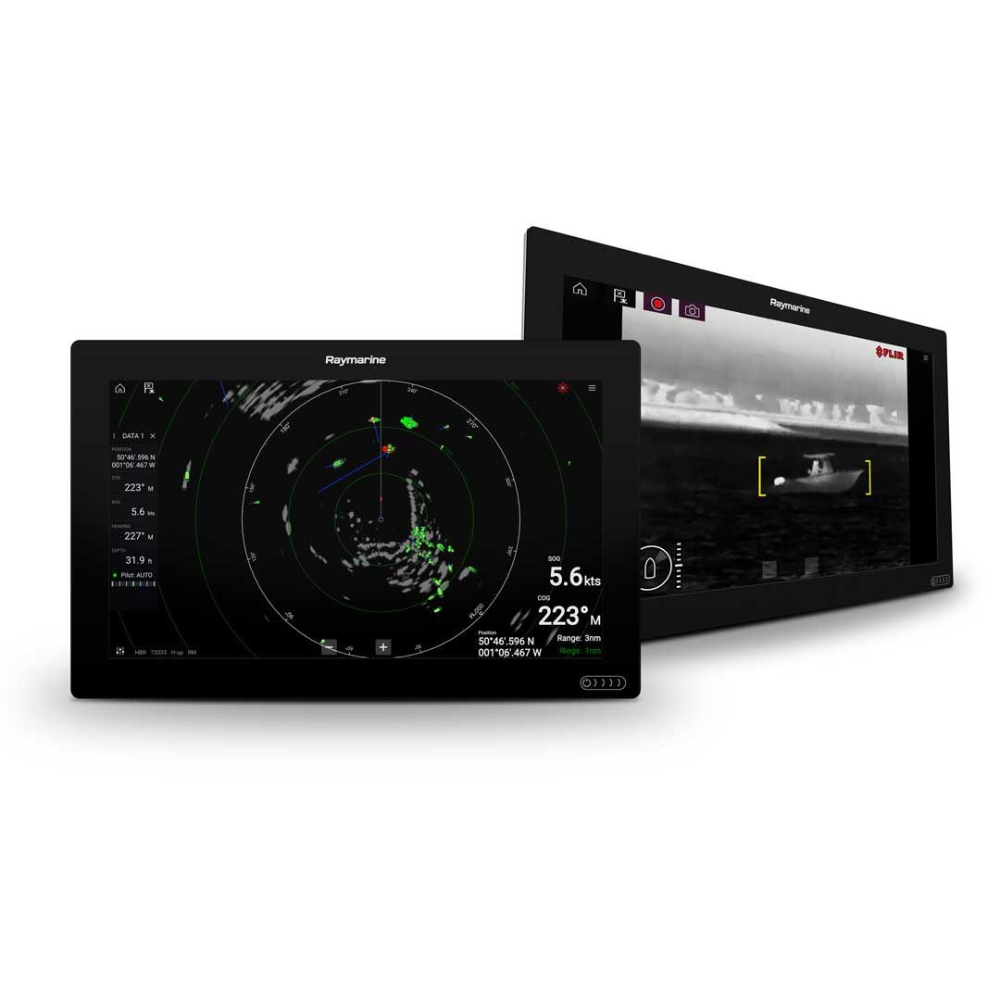
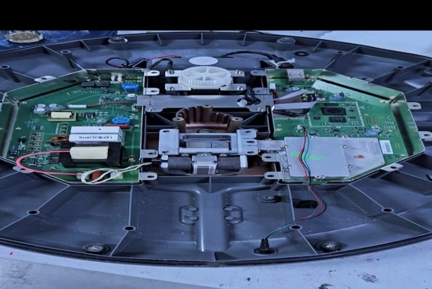
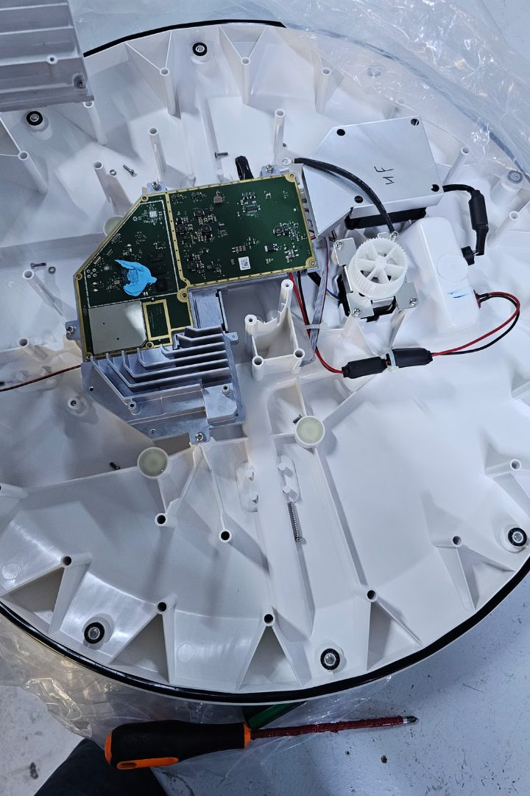
القطع الست، وكيف تعمل معًا — بصور من ورشتنا
خمس قطع ظاهرة أمامك. الهوائي نفسه (الدليل الموجي المشقوق) يجلس فوق الموتور وليس ظاهرًا في هذه اللقطة — نراه في الشريحة التالية.
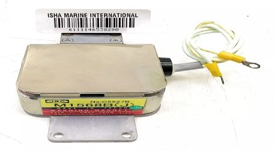
أنبوب تفريغ (vacuum tube) يعمل كمذبذب ميكروويف (microwave oscillator) لإنشاء إشارة الرادار. قطعة تُستهلك.
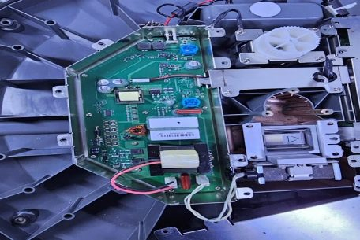
مفتاح قدرة عالية ومحوّل ومكثفات. تعطي الماغنترون الطاقة اللازمة وتتحكم في توقيت النبضات.
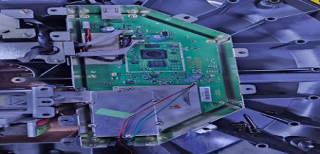
تحوّل الإشارات عالية التردد إلى تردد متوسط وتصفّيها — ثم يستخرج المعالج المعلومات.
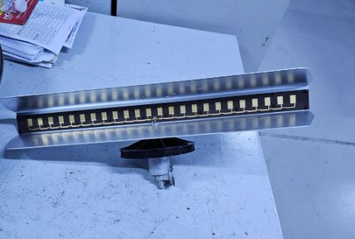
وظيفتان: إرسال النبضات في الهواء واستقبال الترددات العائدة من الأجسام.
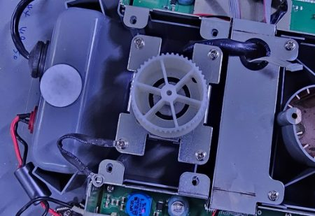
المسؤول عن دوران الهوائي بشكل صحيح وبسرعة ثابتة.
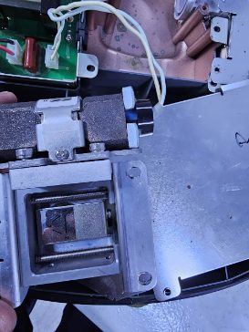
يحمي المستقبل من الموجات العائدة القوية (أهداف كبيرة وقريبة) ويساعد في تصفية الإشارة.
هوائي واحد، لكن المرسل يطلق كيلوواطات والمستقبل يلتقط مليّواطات.
الدوبلكسر: يوجّه النبضة القوية للهوائي ويقفل باب المستقبل، ثم يفتحه للصدى الضعيف — آلاف المرات في الثانية.
الليمتر: على باب المستقبل؛ يقصّ أي إشارة تتجاوز الحد (تسرّب إرسال أو صدى سفينة ملاصقة).
الفكرة في ثلاث كلمات: أرسل، انتظر، احسب.
الرادار يطلق نبضة قصيرة جدًا ثم يسكت ويصغي. زمن عودة الصدى × سرعة الضوء ÷ ٢ = المسافة.
لاحظ: الصدى من الهدف البعيد أضعف — لهذا نحتاج مستقبلًا حساسًا جدًا، وحماية له (الدوبلكسر والليمتر).
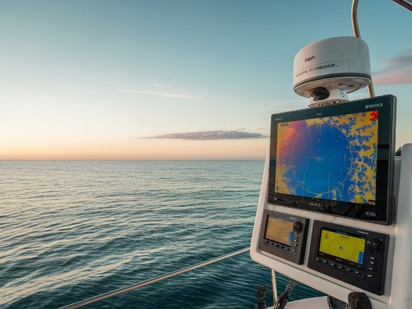
النوع الحديث: بورد واحد بلا ماغنترون — والمقارنة بين النوعين
لا ماغنترون يُستبدل.
مكونات صلبة أقل عرضة للفشل.
أخف وأسهل تركيبًا.
يعمل عبر نطاق واسع.
تقنية أحدث.
وظائف مدمجة.
تعوّضها نبضات أطول.
بلا جهد عالٍ = فك أكثر أمانًا.
| الميزة | الرادار النبضي (الماغنترون) | الرادار ذو الحالة الصلبة |
|---|---|---|
| نوع التكنولوجيا | يعتمد على الماغنترون (أنبوب مفرّغ) | أجهزة الحالة الصلبة (الترانزستورات) |
| توليد الإشارة | يولّد نبضات ميكروويف عالية الطاقة | يولّد ويضخّم الإشارات بالترانزستورات |
| قوة الإخراج | قوة ذروة عالية، مناسبة للمسافات الطويلة | قوة ذروة أقل تعوّضها نبضات أطول |
| الحجم والوزن | أكبر وأثقل بسبب المكونات | أخف وزنًا وأقل مكونات |
| الموثوقية | أقل بسبب الأنابيب المفرّغة؛ صيانة أكثر | أكثر موثوقية مع نقاط فشل أقل |
| التكلفة | تكلفة أولية أقل؛ صيانة أعلى | تكلفة أولية أعلى؛ صيانة أقل على المدى الطويل |
| المرونة البيئية | قد يتأثر بالضباب والمطر | أداء أفضل عمومًا مع تمييز أفضل للأهداف |
| دوبلر | ✗ غير ممكن | ✓ ممكن (متماسك الطور) |
| التعقيد | تصميم أبسط عمومًا | أكثر تعقيدًا بسبب الوظائف المدمجة |
X-band و S-band · شكل الشعاع وخصائصه · تأثير دوبلر
X-band: 8–12 GHz، طول موجة 2.5–3.75 cm. يُستخدم في القوارب الصغيرة والمتوسطة.
S-band: 2–4 GHz، طول موجة 7.5–15 cm. للسفن الكبيرة (حسب حجم الهوائي)، ويعمل أفضل في الظروف المناخية الصعبة.
| الميزة | رادار X-band | رادار S-band |
|---|---|---|
| نطاق التردد | 8 إلى 12 جيجاهرتز | 2 إلى 4 جيجاهرتز |
| طول الموجة | أقصر (2.5 – 3.75 cm) | أطول (7.5 – 15 cm) |
| الدقة | أعلى؛ أفضل للأجسام الصغيرة والتفاصيل الدقيقة | أقل؛ أفضل للرؤية الوضعية على المدى الطويل |
| التشتت | أكثر عرضة للاختناق من الأمطار | أقل تأثرًا بالأمطار؛ فعّال للأهداف الكبيرة في البحار القاسية |
| إدارة الفوضى | يلتقط فوضى أكثر لكن بمعلومات تفصيلية | أفضل في إدارة فوضى البحر بالمياه المفتوحة |
| حالات الاستخدام | الملاحة عالية الدقة في المياه المكتظة | الملاحة على المدى الطويل وتجنب التصادم |
| حجم الهوائي | هوائيات أقصر — أنظمة أكثر إحكامًا | هوائيات أطول بسبب طول الموجة |
| التكلفة | أكثر تكلفة عادةً | أقل تكلفة عمومًا |
شعاع الرادار هو انبعاث موجّه لموجات الراديو يطلقه نظام الرادار — مثل ضوء الكشّاف: لا ينتشر في كل الاتجاهات بل في «شفرة» محددة.
الشعاع ليس له حدود حادة. نتفق أن حدوده هي المكان الذي تنزل فيه القوة إلى النصف — والزاوية بين الحدين اسمها عرض الشعاع.
موجّه للأعلى — رادارات الطقس تكشف به المطر والعواصف.
موجّه نحو الأفق — الملاحة واكتشاف الأهداف ومراقبة حركة السفن. هذا شعاعنا.
مزيج من العمودي والأفقي — منظور ثلاثي الأبعاد لمسح البيئة المحيطة (رادارات التتبع).
ضيق = دقة أعلى ومساحة أقل. واسع = مساحة أكبر وتفاصيل أقل.
كسب عالٍ = شعاع أضيق يصل أبعد (كشّاف). منخفض = أوسع وأقرب (مصباح).
كم يبقى الشعاع على الهدف؛ أطول = نبضات أكثر = صدى أوضح.
طول الهوائي وشكله يحددان شكل الشعاع: الأطول = الأضيق.
تغيّر تردد الصدى يكشف هل الهدف يقترب أم يبتعد — الشريحة التالية.
تأثير دوبلر هو التغير في التردد (أو الطول الموجي) لموجة بالنسبة لمراقب متحرك بالنسبة لمصدر الموجة.
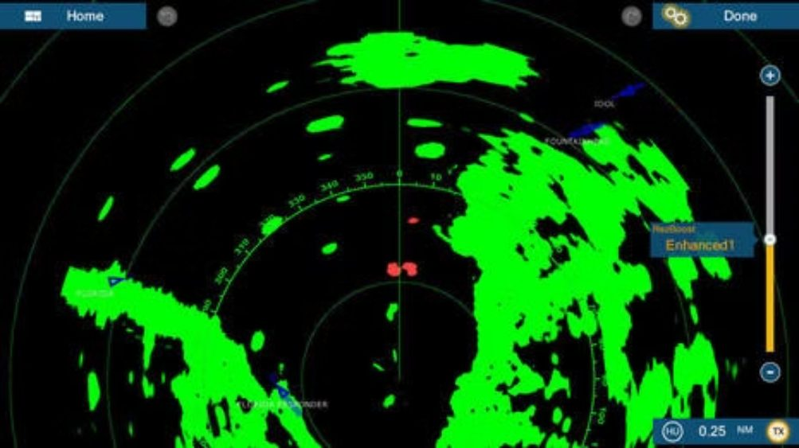
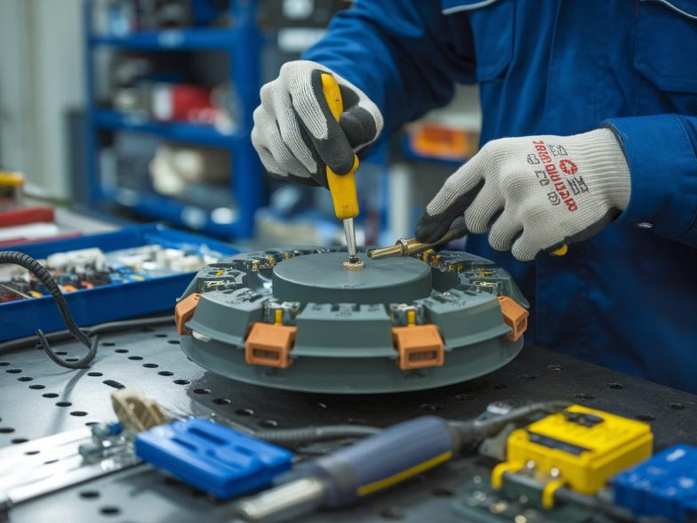
خطوات التركيب، خطوات الفك، وقواعد السلامة
▸ التعامل بحذر مع المكونات الإلكترونية لتجنب تلفها.
▸ يمكنك ارتداء قفازات إذا كان متاحًا.
▸ تفقّد كيبلات الجهاز بصريًا أو التصوير أثناء الفك لمعرفة كيفية إعادة تركيبها بسهولة.
▸ إذا كنت تشعر بعدم الثقة في فك الجهاز، فالأفضل الاستشارة لتجنب أي ضرر.
▸ جهد عالٍ مخزّن: مكثفات المودوليتر تحتفظ بمئات إلى آلاف الفولت بعد الإطفاء — انتظر دقائق ثم فرّغها بأداة معزولة.
▸ مغناطيس قوي: الماغنترون يسحب المفكات ويتلف الساعات والبطاقات والهواتف.
▸ لا إرسال والغطاء مفتوح: ولا أحد أمام الهوائي أثناء الاختبار.
▸ الموتور: أبعد الأصابع عن التروس عند اختبار الدوران.
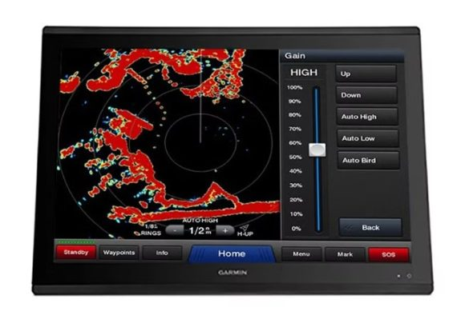
Transmit/Standby · Gain · Sea Clutter · Rain Clutter · تشخيص الأعطال
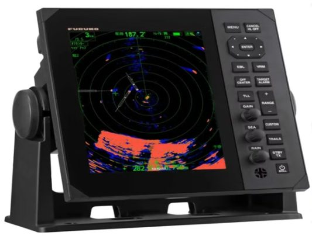
السبب المحتمل: الوضع Standby، أو Gain منخفض، أو الماغنترون ضعيف.
أول شيء تفحصه: وضع Transmit ← Gain ← مؤشر Tune.
السبب المحتمل: الماغنترون انتهى عمره (قطعة تُستهلك).
أول شيء تفحصه: ساعات التشغيل ومؤشر Tune — ثم التبديل.
السبب المحتمل: خط الاتجاه غير معايَر بعد التركيب.
أول شيء تفحصه: معايرة Heading Line على هدف معروف.
السبب المحتمل: الموتور، أو السير، أو الفيوز.
أول شيء تفحصه: الفيوز ← صوت الموتور ← السير.
السبب المحتمل: كيبل البيانات أو الموصل.
أول شيء تفحصه: الموصلان عند الهوائي وعند الشاشة (رطوبة، صدأ).
السبب المحتمل: الطاقة لا تصل.
أول شيء تفحصه: الفيوز ← الجهد 12/24 V ← القطبية.
المحطات السبع — أين وصلنا:
الفصل التالي: جهاز قياس الأعماق (Echo Sounder)